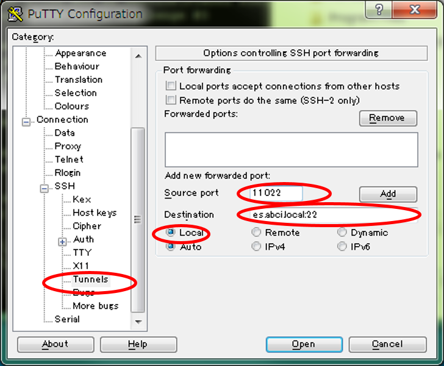

PuTTYの利用
ここでは、Windowsで利用可能なSSHクライアントである、PuTTYを用いたインタラクティブノードへのログイン手順を示します。OpenSSHクライアントなどコマンドラインベースのSSHクライアントを利用したログイン手順は、インタラクティブノードへの接続を参照してください。
インタラクティブノードへのログインは、以下の手順で実施します。
- PuTTYを起動し、SSHトンネル情報を設定
- アクセスサーバ(as.abci.ai)にログインして、SSHトンネルを作成
- 別のPuTTY画面を起動して、SSHトンネルを用いてインタラクティブノードにログイン
Note
事前にABCI利用ポータルにてSSH公開鍵の登録が必要です。
SSHトンネル情報の設定
-
PuTTY の起動
PuTTYを起動すると以下のような画面が表示されます。
-
SSHポート転送の設定
左のCategoryから、 Connection -> SSH -> Tunnels とメニューを開き、Tunnlesをクリックします。表示されたSSHポート転送の設定項目に、以下表の設定値を入力します。ポート番号はお使いのシステムで許容されているポート番号の中から任意の値を設定可能ですが、他の設定は固定値です。
項目 画面と設定値 設定画面  ローカルのポート システムで許されている任意のポート番号 (画面例: 11022) リモート側ホスト es.abci.local:22 または es:22 (画面例: es.abci.local:22) ポート 22 (固定値) -
[Add]ボタンをクリックして設定を追加します。
アクセスサーバへの接続
ここでは、アクセスサーバの接続手順を説明します。
-
左のCategoryから、 Connection -> SSH -> Authを選択します。設定は以下のとおりです。
項目 画面と設定値 設定画面 秘密鍵ファイル 認証に使用する秘密鍵ファイルのパス -
アクセスサーバへのログイン 左のCategoryからSessionを選択し、アクセスサーバへのログイン情報を入力します。
項目 画面と設定値 設定画面 ホスト名 as.abci.ai 入力が完了したら[Open]ボタンをクリックします。
ABCIアカウントおよびパスフレーズを入力し、アクセスサーバにログインします。ログインに成功すると以下の画面が表示されます。ABCIにログイン中は、このログインセッションを維持する必要があります。
Warning
画面上で何らかのキーを入力するとSSH接続が切断されてしますので注意してください。
インタラクティブノードへの接続
ここでは、インタラクティブノードへの接続手順を説明します。
-
認証設定（インタラクティブノード）
新規にPuTTYを起動し、SSHの認証情報を設定します。インタラクティブノードの認証は、アクセスサーバと同じです。アクセスサーバの認証方法を参照し、SSHの認証情報を入力してください。
-
インタラクティブノードへのログイン
左のCategoryからSessionを選択し、インタラクティブノードへのログイン情報を入力します。
項目 画面と設定値 設定画面 ホスト名 localhost TCPポート SSHトンネル情報の設定で設定したポート番号 (画面例: 11022) 入力が完了したら[Open]ボタンをクリックします。
ログインに成功すると、以下のような画面が表示されます。